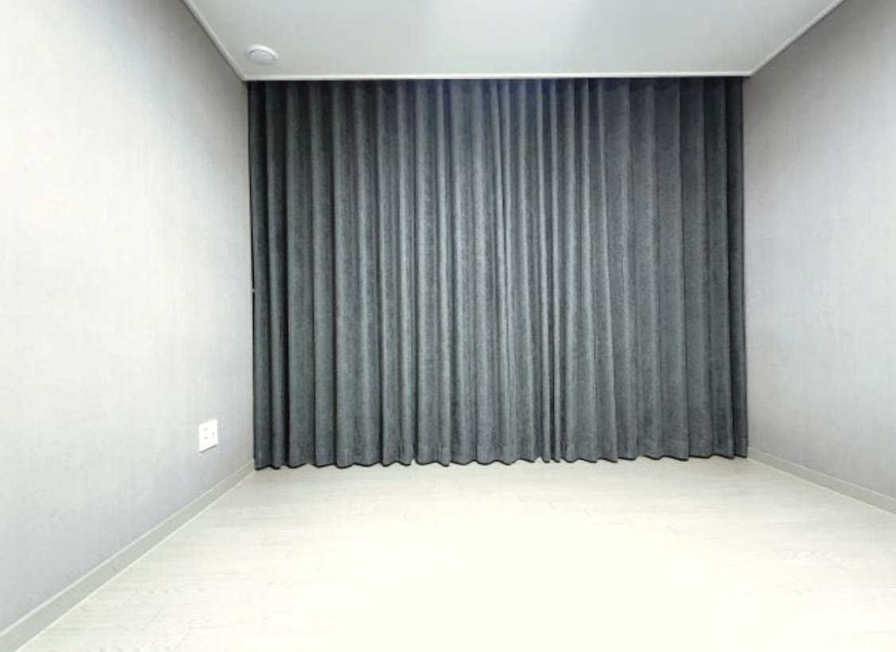
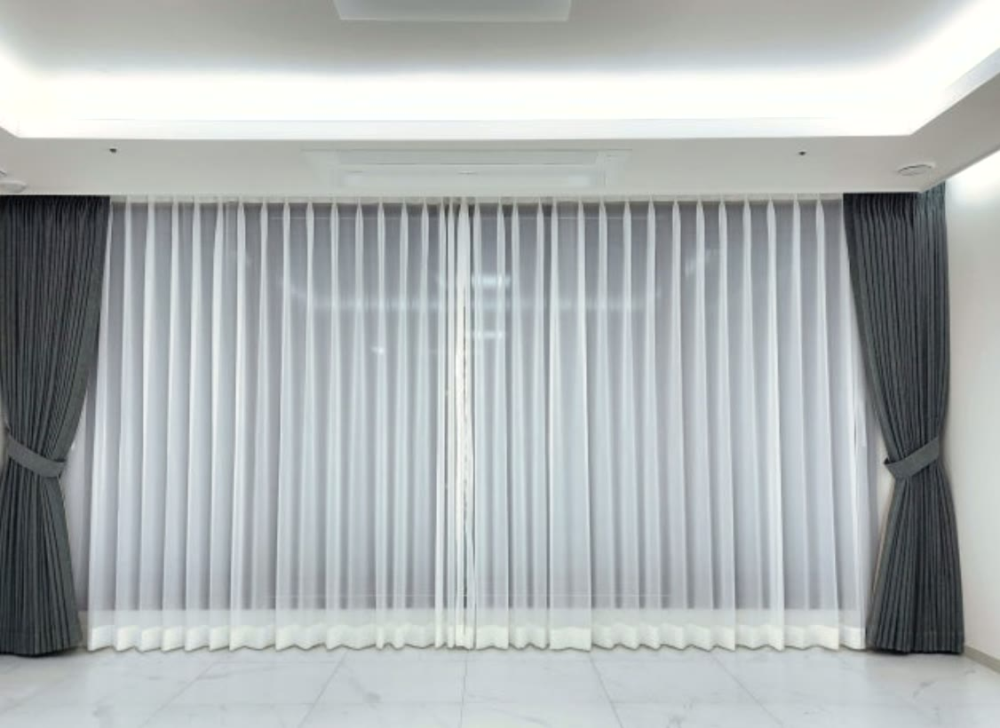
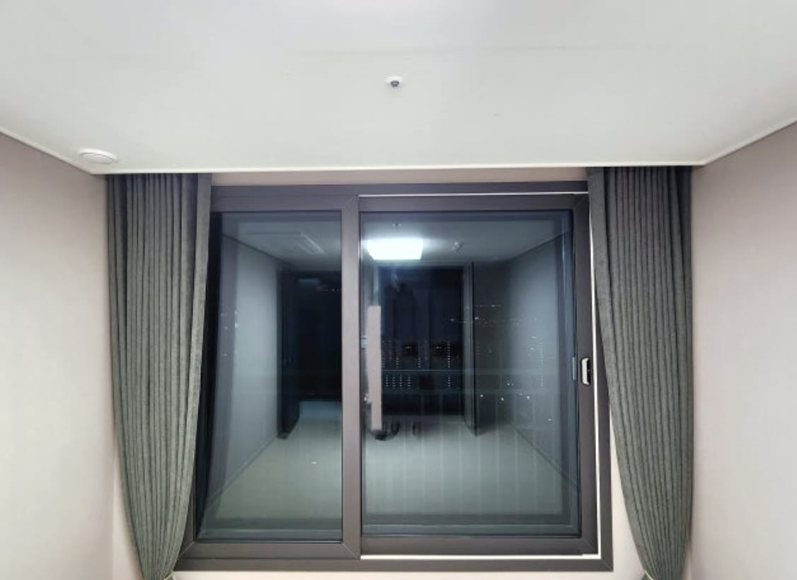
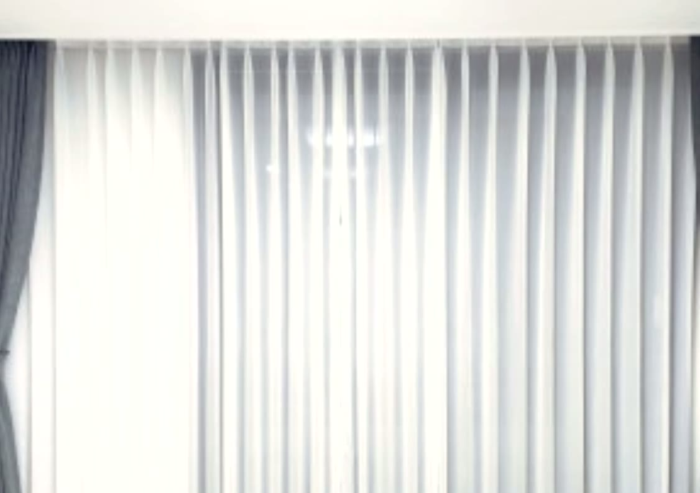

2026년 6월 21일 시공
영주 아파트 전 공간
진그레이 암막커튼 시공후기

영주의 리모델링 아파트에 다녀왔습니다.
깔끔하게 새로 단장하고 이사를 앞두신 집이었습니다.
고객님은 자영업을 하셔서 늦게 주무시고 아침에 휴식을 취하시는 생활 패턴이었습니다.
아침 햇빛이 들면 숙면이 어렵다며, 침실은 물론 거실과 작은방까지 집 안 모든 공간의 빛을 완전히 막아 달라고 하셨습니다.
아침에 주무시는 분께는 완전 차광이 먼저입니다
일반 커튼은 원단 틈이나 창 가장자리로 빛이 스며들어, 예민한 분은 그 정도만으로도 잠을 설칩니다.
그래서 이 댁은 처음부터 빛을 거의 들이지 않는 암막 원단을 기준으로 잡았습니다.
작은방까지 전부 암막으로 통일하면, 어느 방에서 쉬셔도 낮에 커튼만 치면 밤처럼 어두워집니다.
생활 패턴이 남다른 분께는 이 부분이 가장 중요합니다.

거실과 안방은 쉬폰과 암막을 함께 단 이중 커튼
거실과 안방에는 쉬폰 커튼과 암막커튼을 나란히 단 이중 구성을 시공했습니다.
낮에는 안쪽 쉬폰만 치면 빛이 은은하게 들어와 답답하지 않습니다.
주무실 때나 햇빛이 강할 때는 바깥 암막까지 치면 빛을 거의 완전히 차단할 수 있습니다.
한 창에서 채광과 완전 차광을 모두 쓸 수 있어, 생활 시간대가 불규칙한 분께 가장 실용적인 조합입니다.

색은 진그레이 형상기억으로 잡았습니다
암막 색은 리모델링한 집의 톤을 해치지 않도록 진그레이로 통일했습니다.
진그레이는 밝은 벽지와 마감재에 무게감을 더해 공간을 차분하고 고급스럽게 잡아 줍니다.
여기에 형상기억 가공을 더했습니다.
형상기억 커튼은 처음 잡힌 주름 모양을 오래 유지해, 여닫기를 반복해도 주름이 흐트러지지 않고 자로 잰 듯 단정하게 떨어집니다.

두배 나비주름으로 풍성하게 마감했습니다
쉬폰과 암막 모두 두배 나비주름으로 잡았습니다.
두배 주름은 원단을 창 폭의 두 배 분량으로 넉넉히 써서 주름을 깊고 일정하게 잡는 방식입니다.
같은 원단이라도 훨씬 고급스럽게 떨어져, 리모델링한 집의 모던한 분위기와 잘 어울립니다.
이중 커튼은 쉬폰 레일과 암막 레일을 나란히 시공하므로, 두 커튼이 서로 걸리지 않고 부드럽게 여닫히도록 레일 간격을 잡는 것이 관건입니다.
거실 통창부터 작은방 창까지 각 창을 실측해 길이와 폭을 맞추고, 모든 방의 주름결이 균일하게 떨어지도록 마무리했습니다.

관리도 어렵지 않습니다
암막과 쉬폰 모두 평소 가볍게 먼지를 털어 주시면 됩니다.
세탁이 필요할 때는 중성세제로 약하게 손세탁하거나 드라이를 권합니다.
형상기억 원단은 강하게 비틀어 짜지 않고 물기만 빼서 걸어 말리시면 주름이 그대로 살아납니다.
아침에 주무셔야 하는 고객님께 가장 중요한 건 확실한 차광이었고, 전 공간 진그레이 암막으로 그 부분을 깔끔하게 해결해 드렸습니다.
영주를 포함한 대구·경북 전 지역, 아파트·단독주택·상가 커튼 시공이 고민되시면 편하게 문의 주세요.